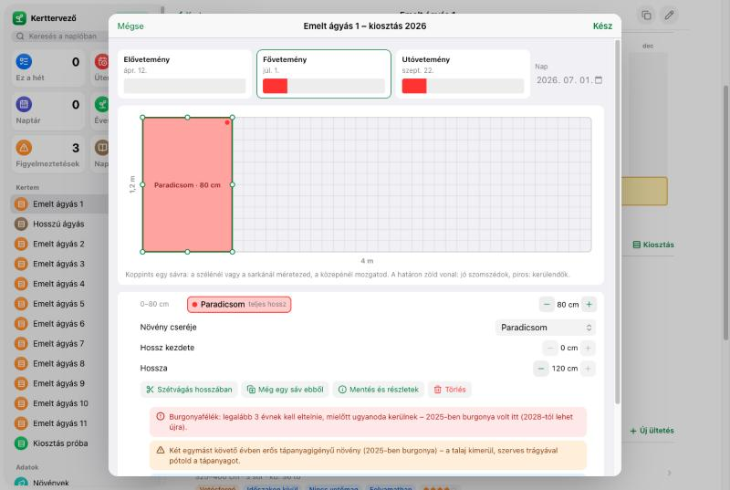
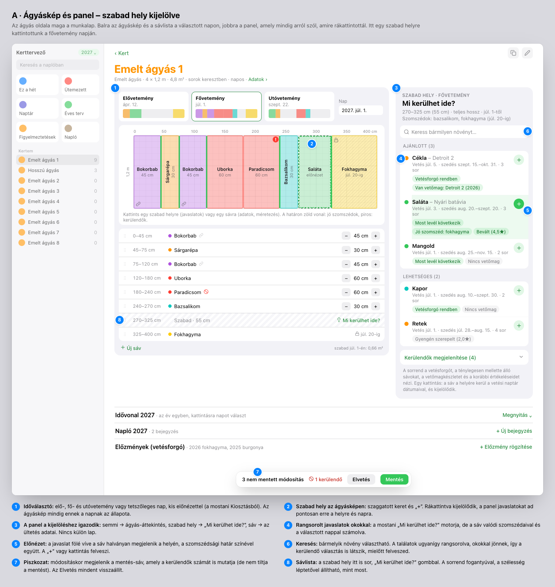
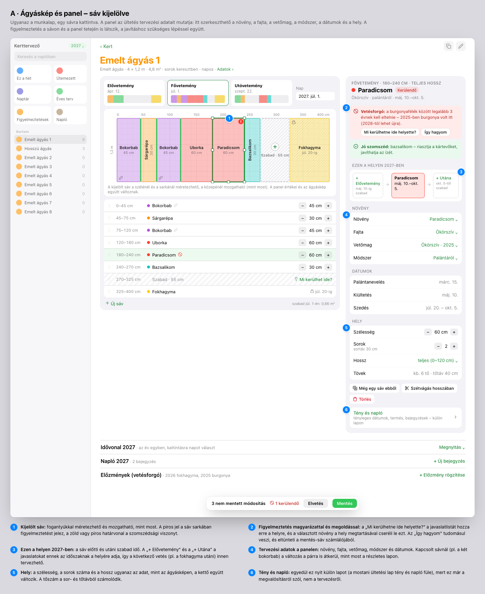
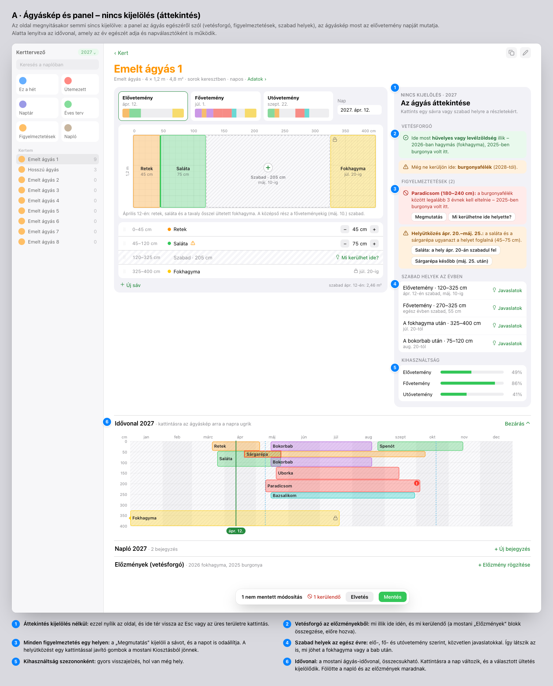
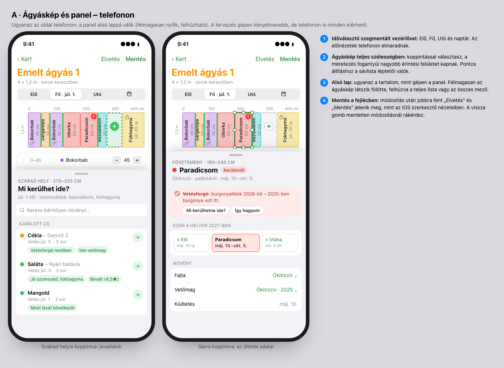
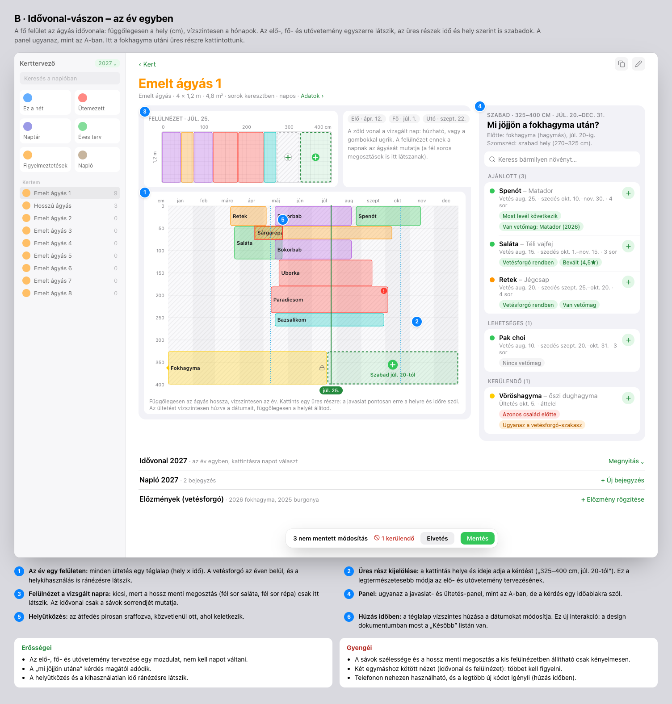
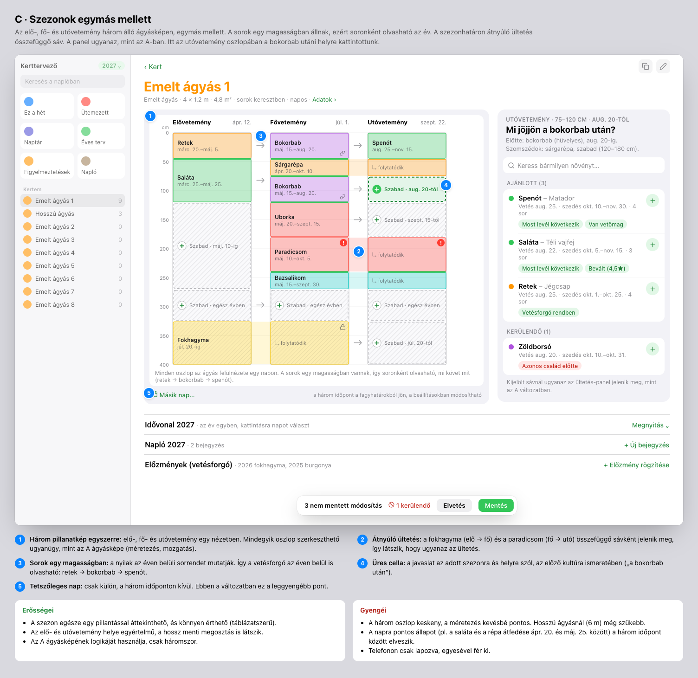

Ágyás-munkalap – wireframe-javaslatok
2026-10-09 · branch: agyas-tervezes · példa: Emelt ágyás 1 (4 × 1,2 m, sorok keresztben), 2027-es terv; előzmény: 2025 burgonya, 2026 ősszel fokhagyma
A kiindulás
Egy ágyás megtervezése ma három helyen történik:
- az ágyás oldalán (idővonal, felülnézet, ültetések listája);
- a Kiosztás lapon (sávok elhelyezése);
- a Mi kerülhet ide? lapon, ahonnan a választás után egy harmadik lap, az ültetési lap nyílik.
A Kiosztásban a növényt egy egyszerű listából kell választani, ezért a figyelmeztetés csak a sáv felvétele után jelenik meg. Ezen a képen például a paradicsomnál derül ki, hogy burgonya után kerülendő. Pedig a javaslat-lap éppen ezt mondta volna meg előre.

Ma: a Kiosztás lap egy frissen felvett paradicsommal. A figyelmeztetés a felvétel után, a lap alján jelenik meg.
Közös alapelvek (mindhárom változatban)
- Egy képernyő: az ágyás oldala maga a munkalap. Nincs külön Kiosztás- és javaslat-lap; külön lapot csak a „Tény és napló” nyit.
- A panel a kijelöléshez igazodik: kijelölés nélkül az ágyás áttekintése, szabad helyre kattintva a „Mi kerülhet ide?”, sávra kattintva az ültetés adatai.
- A javaslat ott jelenik meg, ahová kattintasz: a hely és a nap adja a kérdést. A rangsor a vetésforgót, a valódi szomszédokat, a vetőmagkészletet és a korábbi értékeléseket veszi figyelembe. A keresőben bármelyik növény választható, ugyanezekkel az okokkal.
- Figyelmeztetés a helyén és magyarázattal: jel a sávon, színes határvonal a szomszédok között, a panelen pedig az ok és a javítás lehetősége (csere, helyütközés feloldása).
- Piszkozat: módosításkor megjelenik egy mentés-sáv, amely a kerülendők számát is mutatja. A „Mentés” egyben ír, az „Elvetés” mindent visszaállít.
- A tervezési adatok mind a panelen vannak: növény, fajta, vetőmag, módszer, dátumok, hely, sorok, újravetés.
- Telefonon a panel alsó lappá válik. A tervezés elsősorban gépen történik.
A · Ágyáskép és panel
A mostani Kiosztás ágyásképe kerül az oldal közepére, mellé a kijelöléstől függő panel. Az időt az elő-, fő- és utóvetemény választó (vagy egy nap) adja. Egy sáv előtti és utáni szabad időt az „Ezen a helyen 2027-ben” sor mutatja.
A1 – szabad hely kijelölve

A2 – sáv kijelölve

A3 – nincs kijelölés (áttekintés)

A4 – telefonon

B · Idővonal-vászon
A fő felület az év: függőlegesen a hely, vízszintesen a hónapok. Az üres részek idő és hely szerint kijelölhetők, a vizsgált nap felülnézete kicsiben fölötte látszik.

C · Szezonok egymás mellett
Három álló ágyáskép (elő, fő, utó), soronként egy magasságban. Az átnyúló ültetés összefüggő sáv.

Összehasonlítás
| A · Ágyáskép és panel | B · Idővonal-vászon | C · Szezonok egymás mellett |
|---|
| Elő- és utóvetemény tervezése | jó: napváltás, és az „Ezen a helyen” sor | legjobb: minden egy felületen | nagyon jó: három oszlop |
| Sávok méretezése, sorrendje | legjobb: nagy kép és sávlista | gyengébb: csak a kis felülnézetben | közepes: keskeny oszlopok |
| Hossz menti megosztás | igen | csak a felülnézetben | igen |
| Napra pontos állapot | igen | igen (kurzor) | nem: csak három időpont, a nap külön |
| Telefon | jó: alsó lap | gyenge | lapozva, egyesével |
| Megvalósítás | a legkisebb: a Kiosztás szerkesztője és a javaslatmotor újrahasznosítható | a legnagyobb: új idővonal-szerkesztő, húzás időben | közepes: három vászon, átnyúló sávok |
| Megszokás | ismerős (a mostani Kiosztás) | új gondolkodásmód | könnyen érthető |
Javaslatom
Az A változat legyen az alap, két elemmel a többiből:
- a B-ből az „Ezen a helyen 2027-ben” sor (mi volt előtte, mi jöhet utána), és az idővonal mint lenyitható napválasztó az oldal alján;
- a C-ből a „Szabad helyek az évben” lista az áttekintésben, szezononként.
Ez adja a legjobb sávszerkesztést, telefonon is működik, és a meglévő kódra épül. Az idővonalon való húzás (a B legerősebb eleme) később önálló bővítésként jöhet.
A választás után egyeztetendő
- Elhelyezés nélküli ültetések: az ágyásképen nem látszanak. Javaslat: az áttekintésben külön sor „Elhelyezésre vár (1)”, a „Hely kijelölése” gombbal.
- Az ágyás adatai: a mostani adatrács a fejléc egy sorába és a Szerkesztés lapra kerül (méret, irány, napfény, talaj, öntözés).
- Az „Ültetések 2027” lista: a sávlista és az idővonal kiváltja. A lista kerüljön-e mégis az oldal aljára, összecsukva?
- Az Éves terv oldal „Új ültetés” és „Mi kerülhet ide?” gombja: maradjon ágyásválasztással, vagy vigyen a választott ágyás munkalapjára?